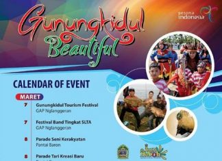

EVENT
Dinas Pariwisata DIY – Informasi agenda event wisata yang ada di Yogyakarta

Specta Seni Budaya PRAWIROTAMAN (14-15 Maret 2020)
EVENT ADMIN PROGRAM - 13 Maret 2020 0Rencang Visiting Jogja, belum punya agenda untuk weekend besok? Yuk mendingan datang ke Hotel Pandanaran Prawirotaman. Wah ada apaa sih? Ini nih yang bikin jogja bakalan heboh, karna akan ada : *Specta Seni Budaya Prawirotaman* Yang mempersembahkan : ✔ Reog Kendang & Jathilan..

Agenda Wisata Bulan Maret 2020
EVENT ADMINISTRATOR - 2 Maret 2020 0Berikut ini adalah file Agenda Event Wisata bulan Maret 2020, yang telah disusun oleh Dinas Pariwisata DIY.
Sumber: Seksi Pengelolaan Informasi Pariwisata, Bidang Pemasaran, Dinas Pariwisata DIY

Kalender Event dan Hajad Dalem 2020 Karaton Ngayogyakarta Hadiningratan (Februari-Maret)
EVENT ADMIN PROGRAM - 6 Februari 2020 0Rencang Visiting Jogja, Mengawali bulan Februari, kami sampaikan rangkaian agenda dan Hajad Dalem Karaton Ngayogyakarta Hadiningratan di bulan Februari dan Maret 2020. Untuk informasi lebih lengkapnya, akan disampaikan menjelang pelaksanaan acara. Semoga bermanfaat!
info selengkapnya : @kratonjogja.event

Rencang Visiting Jogja, berikut kami sampaikan daftar Kalender event bulan Maret (COE Maret) Kabupaten Gunungkidul DIY, Calender of Event Maret Kabupaten Gunungkidul DIY Pelaksanaan Event Lokasi 7 Maret 2020 Gunungkidul Tourism festival GAP Nglanggeran 7 Maret 2020 Festival Band Tingkat SLTA GAP Nglanggeran 8 Maret 2020 Parade Seni Kerakyatan Pantai Baron 8 Maret...
Gunungkidul Beautiful: COE Gunungkidul Bulan Maret
EVENT ADMIN PROGRAM - 3 Maret 2020 0Rencang Visiting Jogja, berikut kami sampaikan daftar Kalender event bulan Maret (COE Maret) Kabupaten Gunungkidul DIY, Calender of Event Maret Kabupaten Gunungkidul DIY Pelaksanaan Event Lokasi 7 Maret 2020 Gunungkidul Tourism festival GAP Nglanggeran 7 Maret 2020 Festival Band Tingkat SLTA GAP Nglanggeran 8 Maret 2020 Parade Seni Kerakyatan Pantai Baron 8 Maret...

Dramatari The Legend of Roro Jonggrang (Setiap JUMAT)
EVENT ADMIN PROGRAM - 6 februari 2020 0Rencang Visiting Jogja, Legenda Roro Jonggrang ??? yaaa....ini adalah cerita yang mengisahkan cinta seorang pangeran kepada seorang putri yang berakhir dengan dikutuknya sang putri akibat tipu muslihat yang dilakukannya. Dongeng ini juga menjelaskan asal mula yang ajaib dari Candi Sewu,...
Pencarian
Instagram
[Instagram-feed]